实现与功能检查完成，补修版最终 T8 尚未通过；当前为工作检查点。现有 DMG 属于补修前 full-04 版本，尚未交付当前源码的完整通过候选。
全部影像来自 macOS Godot 实机。原生 320×180，高清整数放大 ×6；点击图像打开高清版。动画为三个实际渲染时刻的循环对照。
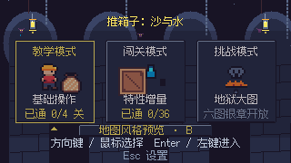
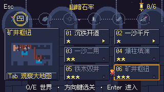
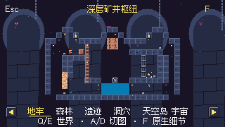
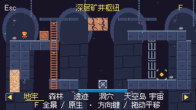
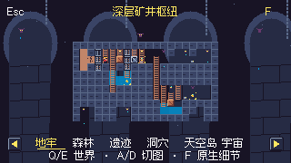
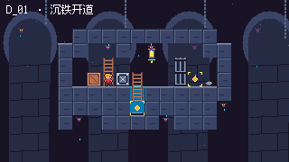
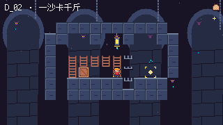
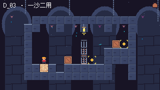
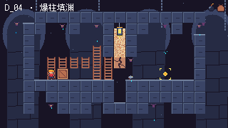
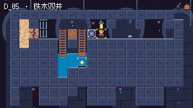
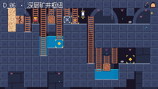
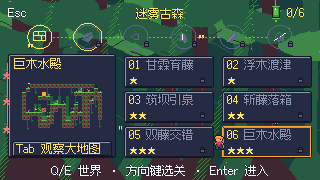
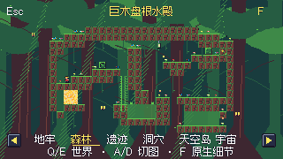
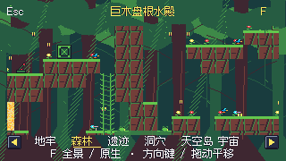
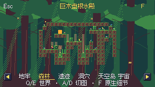
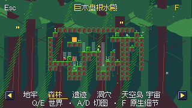
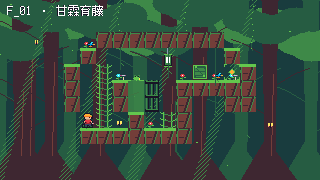
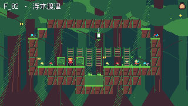
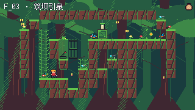
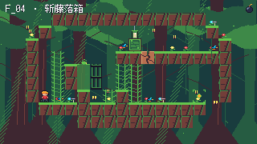
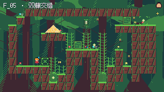
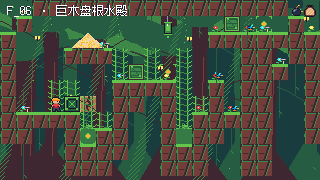
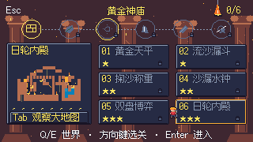
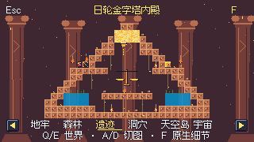
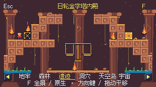
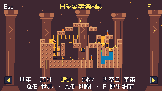
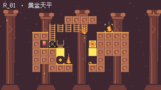
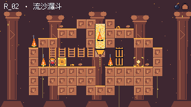
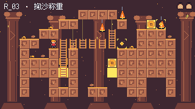
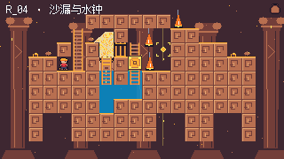
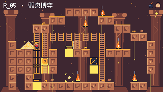
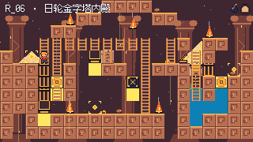
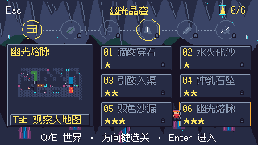
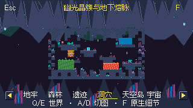
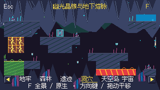
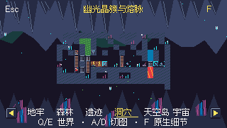
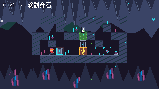
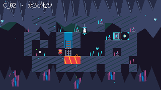
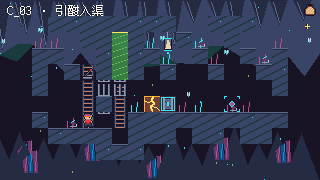
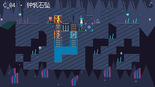
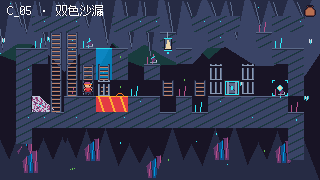
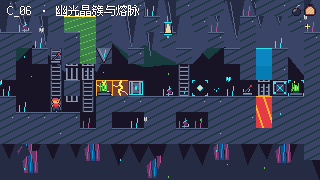
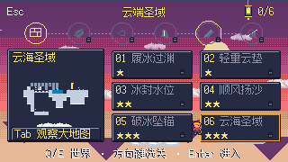
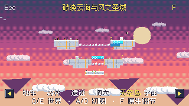
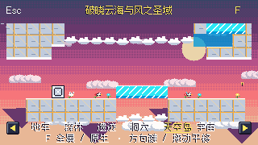
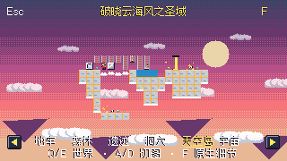
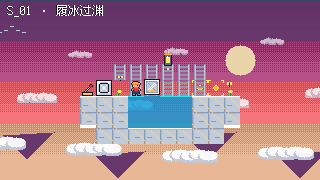
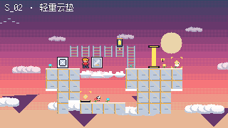
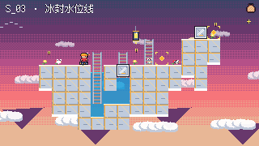
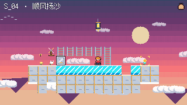
下一步由当前 Codex 在资源空闲后完成全量门禁及更新包。恢复提示词：继续补修版性能门禁与打包；保持单 worker，资源空闲后完整验证，不放宽门槛。